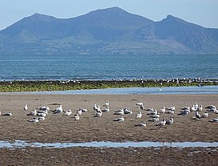
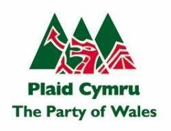

Yr Eifl

The Llŷn Peninsula extends to the west for about thirty miles and here lies most of the level land of
the wider area. It is rare to see the land rising above 600ft (180m). Here and there, one can see
sudden bursts of igneous rocks, creating steep hills, such as Garn Boduan (127m), Mynydd Nefyn
 Yr Eifl dan eira
(255), Garn Fadryn (371), and yr Eifl. The Eifl mountains have three peaks. The highest, which is
Garn Canol in the middle (564m), the smallest, Garnfor (known locally as Mynydd Gwaith (the
Mountain of the Main Quarry) is to the north, and is closest to the sea (444m), and the third (485m)
to the south-east, which is Mynydd y Ceiri. On this summit, one can see Tre’r Ceiri, a very notable
Iron Age hillfort. There are three villages around the foot of mountains – Llithfaen, Trefor and
Llanaelhaearn. On a fine day, you can see as far as the Wicklow mountains, the Isle of Man and
Cardigan Bay. The summit of Garn Canol is the highest summit in Llŷn. Yr Eifl name means 'the two
forks'. Gafl is the Welsh word for a fork, ‘geifl’ is the word for two forks, and the two saddles between
the three peaks. Granite is the stone in the mountains. Granite is an acidic hard igneous stone
consisting of Quartz and Feldspar. It was created when magma containing a high amount of Quartz,
Feldspar and Mica is slowly cooling underground. As the magma rises to the surface it begins to
cool, and if it can't escape, it hardens. When the magma is in a large magma chamber it can take
millions of years to harden. The fact that it cools slowly makes it a very hard stone and this feature
has made it a popular stone for construction throughout the history of mankind. The grey granite is
the granite in found in these mountains, but there is a colour difference across the world –
Yr Eifl dan eira
(255), Garn Fadryn (371), and yr Eifl. The Eifl mountains have three peaks. The highest, which is
Garn Canol in the middle (564m), the smallest, Garnfor (known locally as Mynydd Gwaith (the
Mountain of the Main Quarry) is to the north, and is closest to the sea (444m), and the third (485m)
to the south-east, which is Mynydd y Ceiri. On this summit, one can see Tre’r Ceiri, a very notable
Iron Age hillfort. There are three villages around the foot of mountains – Llithfaen, Trefor and
Llanaelhaearn. On a fine day, you can see as far as the Wicklow mountains, the Isle of Man and
Cardigan Bay. The summit of Garn Canol is the highest summit in Llŷn. Yr Eifl name means 'the two
forks'. Gafl is the Welsh word for a fork, ‘geifl’ is the word for two forks, and the two saddles between
the three peaks. Granite is the stone in the mountains. Granite is an acidic hard igneous stone
consisting of Quartz and Feldspar. It was created when magma containing a high amount of Quartz,
Feldspar and Mica is slowly cooling underground. As the magma rises to the surface it begins to
cool, and if it can't escape, it hardens. When the magma is in a large magma chamber it can take
millions of years to harden. The fact that it cools slowly makes it a very hard stone and this feature
has made it a popular stone for construction throughout the history of mankind. The grey granite is
the granite in found in these mountains, but there is a colour difference across the world –
Mynyddoedd Yr Eifl o Ynys Llanddwyn
sometimes granite can be pink and sometimes it can be black.
Robert Lambert Gapper or R. L. Gapper was a Welsh sculptor who specialised in working with granite. He was born in 1897 in nearby Llanaehaearn. He also liked to work with slate, bronze and wood. He designed many memorials, tombstones, busts and church furniture, using locally sourced materials. He is regarded as one of Wales' leading sculptors of the twentieth century.
In a café, named Maes Gwyn in the square in Pwllheli, Plaid Genedlaethol Cymru (later Plaid Cymru
Logo Plaid Cymru yn dangos y triban.
– The Party of Wales, known nowadays as Plaid) was formed, during the National Eisteddfod in
1925. In 1933, an artist, named Richard Huws, designed a logo for Plaid Cenedlaethol Cymru, the
‘Triban’, a symbol in the form of three overlapping green triangles, The three triangles represent the
robustness of the mountains. From the direction of Clynnog the three peaks of yr Eifl are clearly
visible and are said to have been the inspiration behind the formation of the Triban as a logo for
Plaid Cymru until the 2007 election campaign, where the yellow poppy, or Welsh poppy, became
Plaid's new logo.